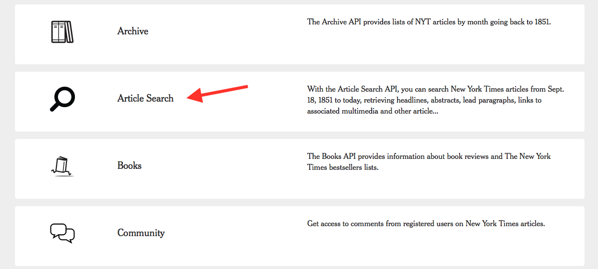
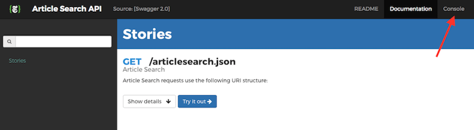
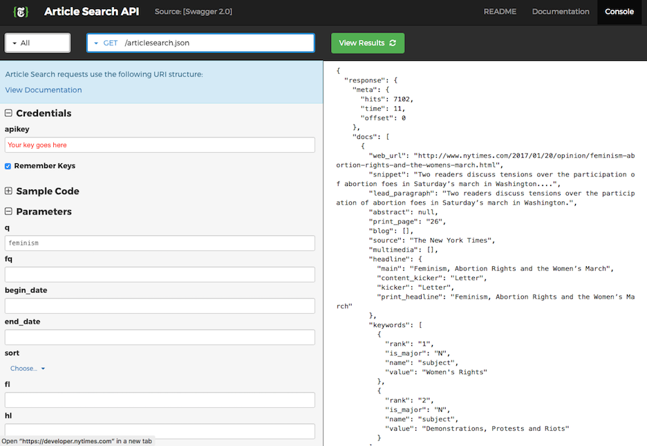
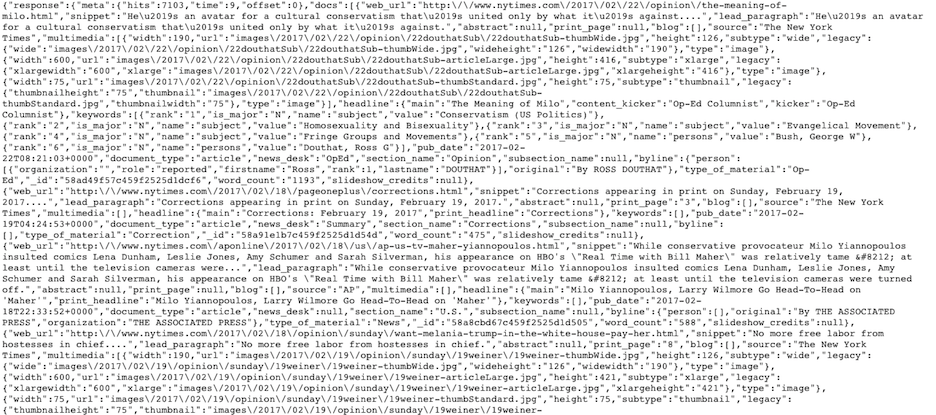
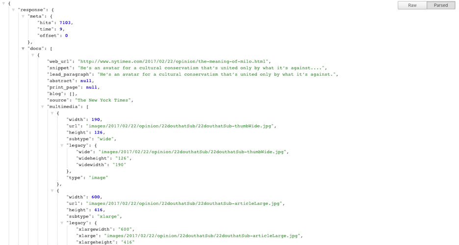
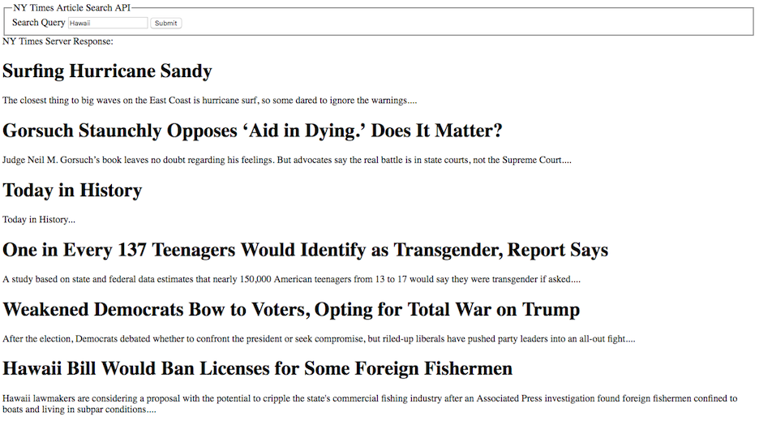

You may have heard of The New York Times
as they are one of the top sources of news and information. What you may not know is that they
are also a premier source of data, being one of only a few newspapers to open their APIs to the public.
They offer a suite of APIs including article search, movie reviews, and top stories.
In this tutorial we're going to focus on the Article Search API, which allows you to
search their archive of articles dating back to September 18, 1851. The general approach is that
you can submit a query and the API returns a JSON list of articles that match your query.
This tutorial is for those who have a basic knowledge of HTML and Javascript. If not, don't fear!
There are many tutorials out there that will get you up to speed quickly. Before we dive in,
take a look at the developer FAQ and
Terms of Use.
The use the NY Times API in your application you must first get an API key. This key allows the NY Times to monitor usage levels and make sure developers are complying with the Terms of Use. Note that if you plan on using more than one of the NY Times APIs, you'll need to request a separate key for each one. We will use this API key in each query we make (more on this later).
After completing and submitting the form above you should receive an email containing your very own API key! You are allowed 1,000 API calls per day and 5 calls per second, which should be more than enough for our needs. Be careful not to share your key with anyone or make it public as it identifies you as the developer.
Each NY Times API features a nifty Console Tool that allows you to build a query, submit it, and inspect the resulting response. This is especially useful for novice programmers as it allows them to validate the query construction and response before putting it in their code.
To get to the Console, click on the Article Search API here:
Then click on "Console" in the upper right corner:
Now you should see a page that looks like this:
 Now let's break down this page to better understand how to build a query and interpret the response.
On the right side of the screen we see a "Credentials" section and a field for your apikey. Go ahead and
paste your own key into this field. We'll come back to the "Sample Code" section in just a bit. The third section
called "Parameters" includes various fields you can use to narrow your search results. You can get details on
the parameters on their Documentation
page, or by clicking on a particular parameter field, but for now let's just focus on the first parameter, q.
This is a string that represents your search query term and searches the article, body, headline, and byline.
You'll notice that I entered the word "feminism" in this field. Now you should see a response to your query
automatically generated on the left side of the screen.
Congrats! You just made your first query to the NY
Times API! I recommend tinkering with this useful tool to get an idea of the types of queries you can make and
verify that the responses generated are what you want. In the next few sections we'll get into the nitty gritty
of how the query works and interpreting the response.
Now that you've gotten your feet wet with the Console Tool and have an idea of what kind of queries you can make, let's try to understand what's happening under the hood.
Remember the "Sample Code" section we skipped over in the last section? Let's take a look at that now.
Continuing our previous example, let's say we just want to do a simple query for all articles that contain the
word "feminism" and we want to sort our results by newest publication date (the default is to sort by relevance to
the search term - q). Your Console should look something like this:
What is all that gibberish? Let's interpret the Javascript line by line.
endpointURL?key1=value1&key2=value2&keyn=valuen...&api-key=###
var url = "https://api.nytimes.com/svc/search/v2/articlesearch.json"
&key=value. This type of format is called a
URI structure. It's just a string of characters
used to identify a resource, which enables interaction with representations of the resource over a network. url += '?' + $.param({
'api-key': "Your API Key Here",
'q': "feminism",
'sort': "newest"
});
https://api.nytimes.com/svc/search/v2/articlesearch.json?q=feminism&sort=newest&api-key=####
Now that you've successfully sent your request, you'll receive a response in JSON format. What is JSON? It stands for JavaScript Object Notation and is similar to an object and array structure in that it is a collection of name/value pairs and is an ordered list of values.
This is what a portion of the response from our example request above looks like:
But this is rather difficult to read. So if you want it nicely formatted in your browser you can download this Chrome extension JSON Formatter and it will look like this instead:
 Much better!
Now collapse all the trees by clicking on the arrows, so it looks like this:
So the APIs response is just an object with a response property, a status property ("OK" means your query was successful), and a
copyright property. If we expand the response property we see that it contains two more properties: meta
and docs. Note that the order isn't guaranteed, so you may see your results in a slightly different order.
meta is an object which contains three properties that have information about the API query.
hits: the number of search resultstime: the time it took to get the resultsoffset: the results page we are currently on docs is an array containing the articles that were returned. You'll notice next to docs it says "10 items".
The Article Search API only returns a max of 10 results at a time, so you'll need to use the page query parameter
we saw in the Console and documentation to paginate through the results. You can paginate up to 100 pages (1,000 results).
If you have too many results you can filter them further by using a date range or another parameter. In the docs array,
each element of the array is one article, which each have their own properties.
Now if we expand the docs tree we can see it's properties. Say I want to access the headline property in docs so I can display or
print it. Then in Javascript I would use dot notation to access the values like this: response.docs.articles[0].headline.main.
This just references each "tree" in our object to get at the property we want. In the next section we'll walk through an example to
tie everything together.
We've covered all the bits and pieces of the NY Times API but let's walk through an example.
Previously, we built a query string and sent it as a GET request by pasting the string into a URL. Though convenient for one request, it's not very practical if you want to make several requests. We showed a glimpse of some Javascript that would send the request for you instead, so let's expand on that.
This is a GET request in Javascript, similar to the one we saw in the previous section. Feel free to use either one, I just think the one below is more readable than the Console Javascript. You can see we save each component of the GET request into a variable, so you don't need to interpret a long query string each time you want to change something. This type of request (called a synchronous request) waits for the request to complete before doing anything with the response. But this by itself still doesn't do much- it simply logs to the console the JSON object response from the API. If you wanted to change the search parameters you would need to manually change the code each time.
Now let's go a step further and make a simple form that the user can use to enter their own search parameters, submit, then receive results from the API.
Let's break down the code above. We're still making a request object as before, but we also register a listener
on the request's load event. This allows us to make an asynchronous request. Note that we also changed the
last parameter of the req.open line from false to true. In the first example, our code
would pause and wait for the request to finish. With an asynchronous request we can continue to do work while
we wait for that function to return. We also added a second event listener to the forms submit button. So
when the user clicks submit that code is executed. This is what the webpage looks like after clicking submit:
This is a bit better, but we still display the response in JSON format, which isn't very reader friendly. Remember the dot notation structure we referenced in the last section to access the properties we wanted? Let's use that to make this easier to read. In fact, let's go even further and say we only want to print out the headlines of the articles that are returned.
We know the articles are going to be in the data.response.docs section so we made a variable
called "data" to store that path. We also added an element to our HTML with an ID of 'headline', then assigned that
variable's textContent property to articles[0].headline.main.
For the sake of variety this time I searched "Hawaii". This gives us the headline, but only of the first article.
Remember "articles" is an array, so by using bracket notation we are only accessing the first article by saying
articles[0]. Well that's great, but we want all the headlines right? So one more step! Let's
get all the headlines returned and let's also print a snippet from each article.
A for loop was added to iterate through all the articles (remember we only get 10 at a time), then we created a new "h1" element and "p" element at each loop for the headline and snippet, respectively. TA DA!
Whew! In this Getting Started Guide for the NY Times Article Search API, we covered how to request an API Key, how to use the NY Times Console Tool, how to build a query string and submit it both as a URL and as a Javascript GET request and how to interpret the JSON response. We capped it all off by showing several examples showing different ways to send the request and also added a form so a user can input their own search parameters and receive a nicely formatted response.
We've only just scratched the surface of what you can do with the NY Times API. Feel free to check out their different APIs and experiment!
© Untitled. All rights reserved. | Design by TEMPLATED.